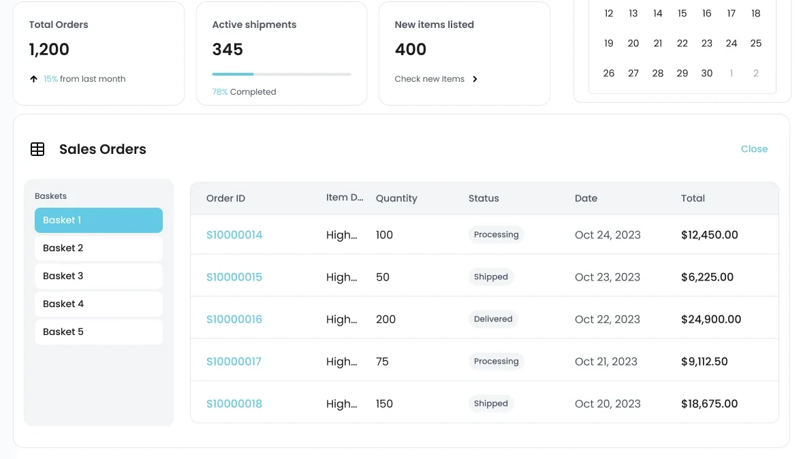

Lead case study
ZUM-IT · B2B ordering portalLive on the Infor LN Marketplace
ZUMConnect: one ordering portal for every client
A website where business customers place and track orders, connected to the company’s main business software (ERP). I redesigned it while it stayed live.
The old portal showed raw system data on every page. I reviewed 12 sections in writing, then rebuilt it one part at a time, so sales never stopped.

- One product, set up per client. Each feature is built once, and every client turns on only the ones it needs.
- A shared design system. A new client gets its own colours, logo and chosen features, not a new design.
- A review loop with developers. I walk them through the design, they build it, and I check the result before release.
Clients2, on one buildActive users30+New client set up inAbout 4 working sessionsTeamOnly designer, with 4+ developers
Read the ZUMConnect case